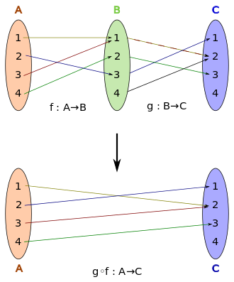

Currying your functional programming
Node.js community
Jorge Lorenzo (jorge.lorenzogallardo@telefonica.com)
7th April 2016
Curried function
A function that will return a new function until it receives all its arguments
Custom implementation
// Curried function
let multiply = function(x, y) {
if (y === undefined) {
return function(y) {
return x * y;
}
}
return x * y;
};
multiply(2, 10); // 20
let duplicate = multiply(2);
duplicate(10); // 20
Implementation with lodash
const _ = require('lodash');
let mult = (x, y) => x * y;
let multiply = _.curry(mult);
multiply(2, 10); // 20
let duplicate = multiply(2);
duplicate(10); // 20
Implementation with ramda
const R = require('ramda');
let mult = (x, y) => x * y;
let multiply = R.curry(mult);
multiply(2, 10); // 20
let duplicate = multiply(2);
duplicate(10); // 20
Underscore and lodash are doing wrong?
Distinguishing features of ramda
- Ramda functions are automatically curried.
- Function parameters are optimized for currying. Data is supplied last.
Implementation with lodash
const _ = require('lodash');
let emails = ['user1@telefonica.com', 'user2@telefonica.com'];
let listToTidDomain = function(emails) {
return _.map(emails, function(email) {
return _.replace(email, /@telefonica.com/, '@tid.es');
});
};
listToTidDomain(emails); // ['user1@tid.es', 'user2@tid.es']
Implementation with ramda
const R = require('ramda');
const emails = ['user1@telefonica.com', 'user2@telefonica.com'];
let toTidDomain = R.replace(/@telefonica.com/, '@tid.es');
let listToTidDomain = R.map(toTidDomain);
listToTidDomain(emails); // ['user1@tid.es', 'user2@tid.es']
Composition
Basic composition example
const R = require('ramda');
let incr = x => x + 1;
let dupl = x => x * 2;
incr(dupl(5)); // 11
R.compose(incr, dupl)(5); // 11
R.pipe(dupl, incr)(5); // 11
Complex composition example
const R = require('ramda');
const tasks = [
{name: 'primera', user: 'user1', completed: true},
{name: 'segunda', user: 'user1', completed: false},
{name: 'tercera', user: 'user2', completed: true},
{name: 'cuarta', user: 'user2', completed: false},
{name: 'quinta', user: 'user1', completed: true},
{name: 'sexta', user: 'user1', completed: false}
];
let completed = R.filter(R.whereEq({completed: true}));
let groupedByUser = R.groupBy(R.prop('user'));
let completedByUser = R.compose(groupedByUser, completed);
completedByUser(tasks); /*
{
user1: [
{name:'primera',user:'user1',completed:true},
{name:'quinta',user:'user1',completed:true}
],
user2: [
{name:'tercera',user:'user2',completed:true}
]
}
*/
let completedByUserNames = R.compose(R.map(R.map(R.prop('name'))),
completedByUser);
console.log(completedByUserNames(tasks)); /*
{user1:['primera','quinta'],user2:['tercera']}
*/
Promise composition example
const R = require('ramda');
let request = function(name) {
return new Promise(function(resolve) {
setTimeout(() => resolve('Hello ' + name), 5000);
})
};
let lowerGreet = R.composeP(console.log, R.toLower, request);
lowerGreet('Jorge'); // hello jorge
References
Questions